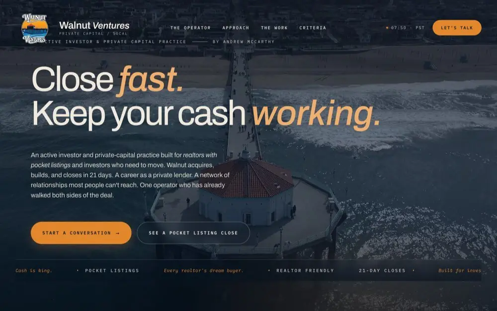
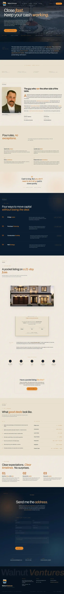

Private Capital · Portfolio Case Study
A website built to make speed feel credible.
Walnut Ventures needed a digital first impression that could carry an operator-led private-capital story: decisive, experienced, relationship-driven, and built around real estate investors who need to move quickly.

The Strategy
A finance website should reduce doubt, not add decoration.
The project translated a relationship-based business into a page hierarchy a new investor or referral partner could understand quickly.
Lead with the commercial advantage
The opening message focuses on speed and capital efficiency instead of starting with a generic company description.
Put experience into the page flow
Operator perspective, transaction examples, and criteria give the positioning something tangible to stand on.
Help the right deal self-qualify
Clear criteria and a focused next step let serious prospects understand whether the capital model fits before reaching out.
Sound decisive without overclaiming
Short, direct copy keeps the experience confident while leaving the details and transaction claims available for proper review.
Build one recognizable visual language
Deep coastal tones, restrained orange, editorial scale, and technical labels create a distinct identity without looking like a bank template.
Custom code, built around the story
The interface was designed for this positioning rather than forcing the business into a prebuilt financial-services theme.
Screenshot-Only Preview
Review the full page without republishing the client website.
This archival preview preserves the design work as TMN proof while keeping the former business site, lead capture, and hosting offline.
What to Notice
The design earns attention, then answers buyer questions.
Scroll the static capture to see how the experience moves from promise to operator story, deal evidence, criteria, and conversion.
- Immediate differentiationThe first screen communicates a point of view instead of listing services.
- Evidence before the askProject and operator context arrive before the primary inquiry moment.
- Responsive hierarchyThe mobile version keeps the promise and proof legible without shrinking the desktop layout.

Static archival image only. No forms, buttons, analytics, hosting, or business contact functions are active.
For Serious Firms
When trust carries the sale, the website has to do more than look expensive.
TMN Creative builds custom websites for financial firms, advisors, family offices, real estate operators, attorneys, healthcare practices, and established service businesses that need a sharper first impression and a clearer buyer path.
Need the firm to feel credible before the first conversation?
Tell us about the buyer, the trust burden, and what the current website is failing to communicate. You will work directly with the founders.